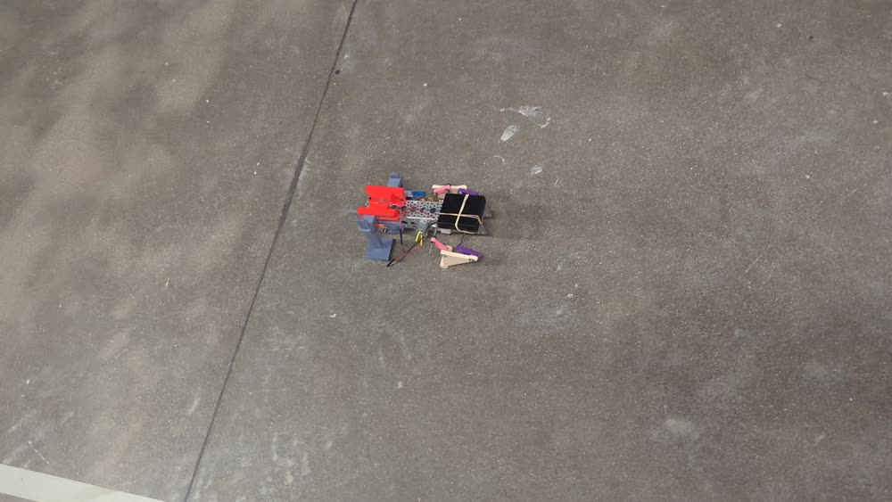
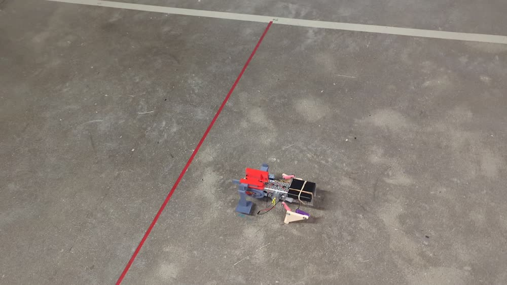

四足步行器 WalkerQuadruped Walker
UIUC 交换期间的团队设计项目：设计一只仅用单台电机驱动的四足步行器，综合四杆与凸轮机构、经齿轮传动把动力分配到四条腿，整机控制在 30 cm 立方体内，并通过实际行走测试。A team design project during my UIUC exchange: a quadruped walker driven by a single motor, combining four-bar linkages and cams and distributing power to four legs through gears, packed within a 30 cm cube and validated by actual walking tests.
设计要点Design Highlights
- 单电机驱动：用一台电机经齿轮传动同时驱动四条腿，简化动力系统、降低成本与重量。Single-motor drive: one motor drives all four legs through gears, simplifying the powertrain and cutting cost and weight.
- 机构设计：综合四杆机构与凸轮，把电机的旋转运动转换为四条腿协调的迈步动作。Mechanism: four-bar linkages plus cams convert the motor's rotation into coordinated stepping of the four legs.
- 尺寸约束：整机紧凑设计，控制在 30 cm 立方体的空间内。Size constraint: a compact design fitting within a 30 cm cube.
- 团队协作：在全英文、跨文化团队中完成"设计—制造—测试—优化"完整迭代，含 CATME 同行互评。Teamwork: ran the full design–build–test–improve iteration in an English-speaking, cross-cultural team, including CATME peer evaluation.
行走演示Walking Demo
实际行走测试录像（已压缩）。Actual walking-test footage (compressed).
行走测试照片Walking-test Photos


图片取自行走测试录像帧。点击图片可查看大图。Frames from the walking-test video. Click an image to view full size.